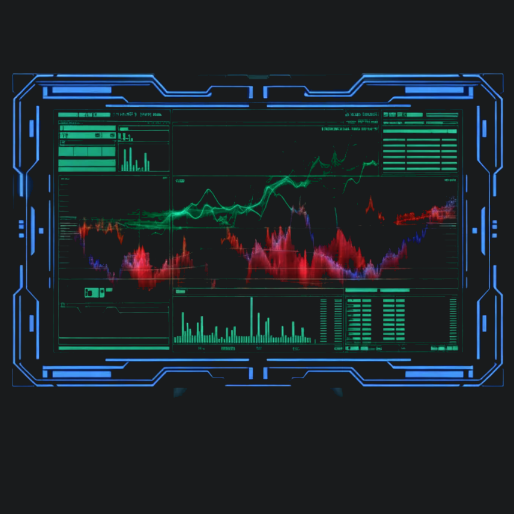
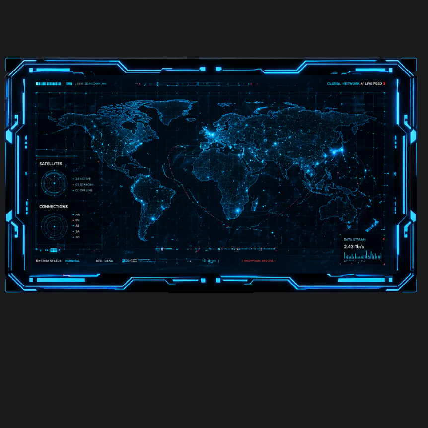
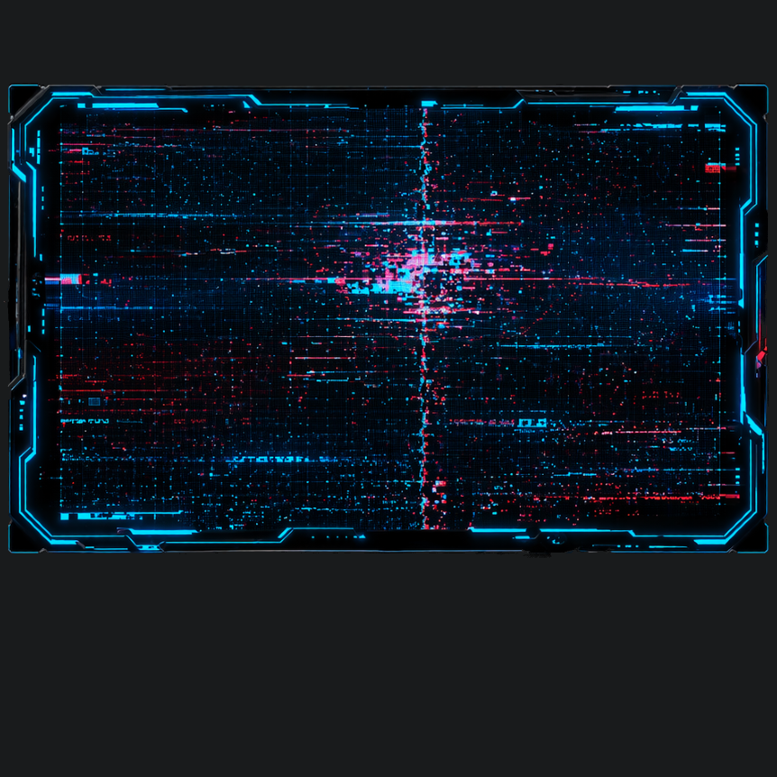
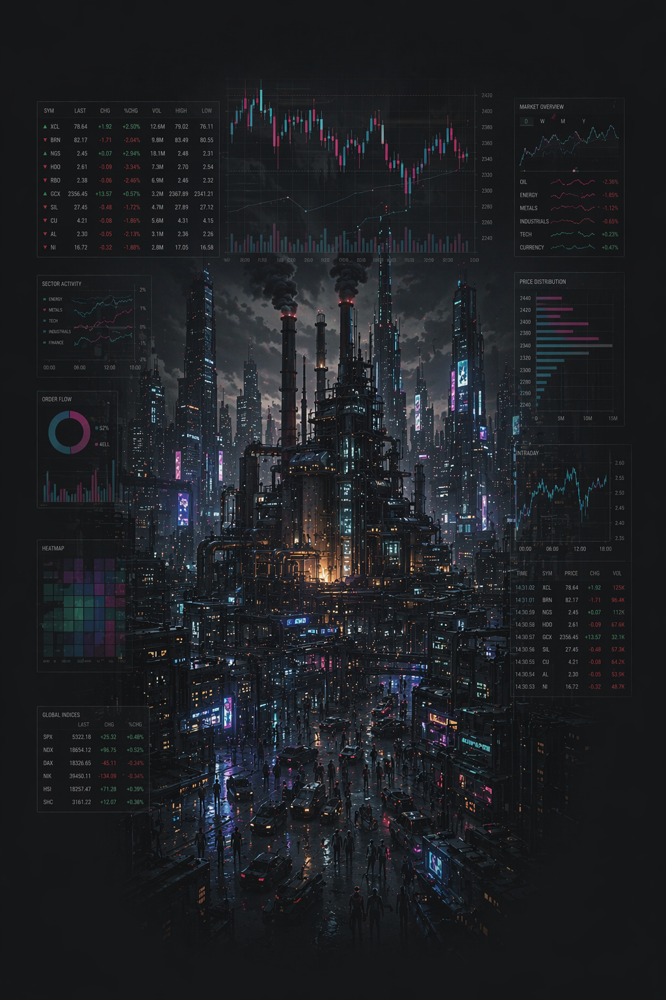

▣ 01: получает 1 нефть.
▲ 02: получает дополнительный карту скрытого влияния, если он выполняет оказание давления в этой фазе.
◆ 03: получает 1 нефть.
★ 04: получает 1 влияние.
✚ 05: должен уничтожить в регионе с фабрикой боевую машину или пехотинца противника с самой низкой стоимостью, если это возможно.
⬟ 06: получает дополнительный карту скрытого влияния, если он выполняет оказание давления в этой фазе.
⬢ 07: должен уничтожить в регионе с фабрикой боевую машину или пехотинца противника с самой низкой стоимостью, если это возможно.
◎︎ 08: получает 1 влияние.
✖ 09: выбирает две особых фабрики в игре и меняет их местами. ⚠️ Этот эффект должен применяться первым.
✦ 10: должен применить любой другой эфект этого события по своему выбору.
▣ 01: теряет 1 нефть.
▲ 02: получает дополнительный карту скрытого влияния, если он выполняет оказание давления в этой фазе.
◆ 03: получает 1 нефть.
★ 04: теряет 1 влияние.
✚ 05: должен уничтожить свою боевую единицу в регионе с фабрикой.
⬟ 06: не может оказывать давление в этой фазе.
⬢ 07: уничтожить свою боевую единицу в регионе с фабрикой.
◎︎ 08: получает 1 влияние.
✖ 09: выбирает две особых фабрики в игре и меняет их местами. ⚠️ Этот эффект должен применяться первым.
✦ 10: должен применить любой другой эфект этого события по своему выбору.
▣ 01: получает 1 нефть.
▲ 02: не может оказывать давление в этой фазе.
◆ 03: теряет 1 нефть.
★ 04: получает 1 влияние.
✚ 05: должен уничтожить в регионе с фабрикой боевую машину или пехотинца противника с самой низкой стоимостью, если это возможно.
⬟ 06: получает дополнительный карту скрытого влияния, если он выполняет оказание давления в этой фазе.
⬢ 07: должен уничтожить в регионе с фабрикой боевую машину или пехотинца противника с самой низкой стоимостью, если это возможно.
◎︎ 08: теряет 1 влияние.
✖ 09: должен заменить одну свою особую фабрику на обычную. ⚠️ Этот эффект должен применяться первым.
✦ 10: должен применить любой другой эфект этого события по своему выбору.
▣ 01: теряет 1 нефть.
▲ 02: не может оказывать давление в этой фазе.
◆ 03: теряет 1 нефть.
★ 04: теряет 1 влияние.
✚ 05: должен уничтожить свою боевую единицу в регионе с фабрикой.
⬟ 06: не может оказывать давление в этой фазе.
⬢ 07: должен уничтожить свою боевую единицу в регионе с фабрикой.
◎︎ 08: теряет 1 влияние.
✖ 09: должен заменить одну свою особую фабрику на обычную. ⚠️ Этот эффект должен применяться первым.
✦ 10: должен применить любой другой эфект этого события по своему выбору.

Начиная с первого игрока и далее по очереди, первый игрок, который не контролирует ни одну особую фабрику, должен выбрать особую фабрику любого цвета из запаса (если есть) и заменить ей одну из своих обычных фабрик.
Только один, первый по порядку очереди, игрок делает это.

Игрок с наименьшим влиянием может выбрать одну особую фабрику в игре и заменить ее обычной.
Если у нескольких игроков одинаково низкий уровень влияния, все они делают это по очереди в порядке хода.
Затем замешайтей эту карту в колоду событий, вытяните и разыграйте ещё одну карту события. Если снова выпала эта карта, то ничего не происходит.

Раскройте и разыграйте следующую карту события.
Раскройте и разыграйте следующую карту события.
